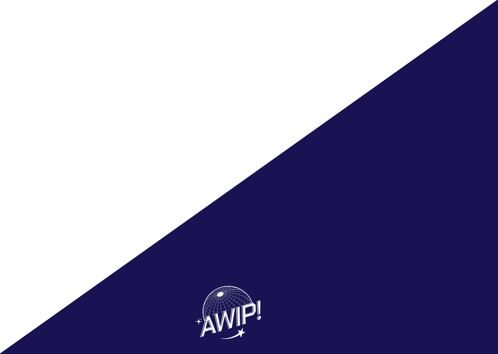

I chose media because I find the mixture of creativity and technology essential for me to express myself.

Hey, my name's Martin


I’m a 19 y/o student in Fontys ICT Eindhoven. I specialize in Media.
My hobbies are art, photography, music -
..overall visually and aesthetically pleasing stuff.